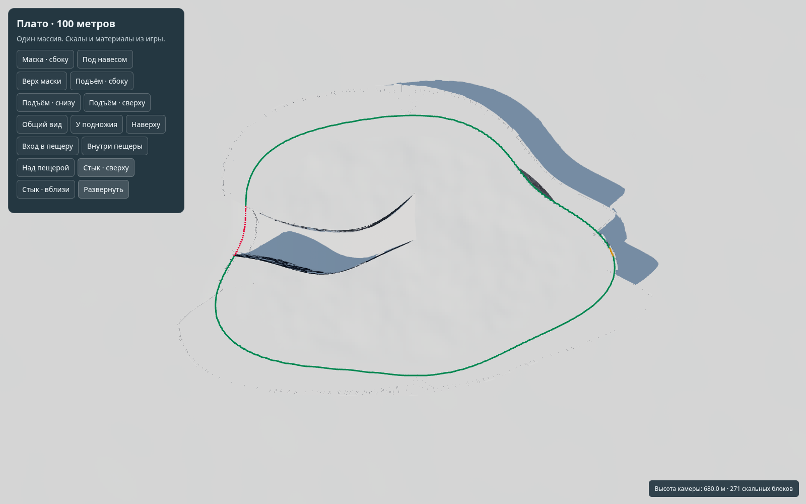
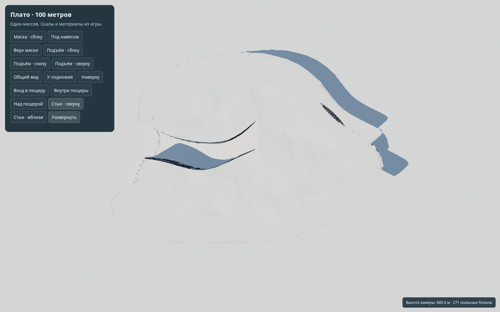
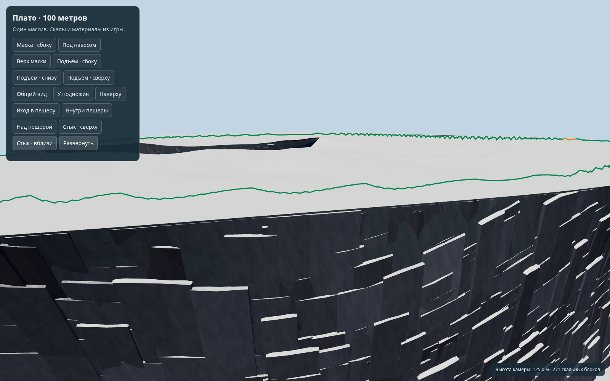
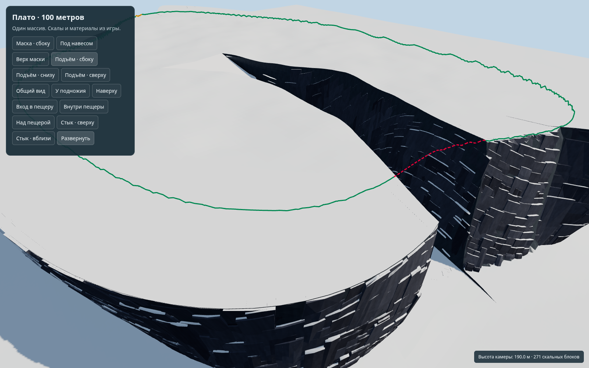
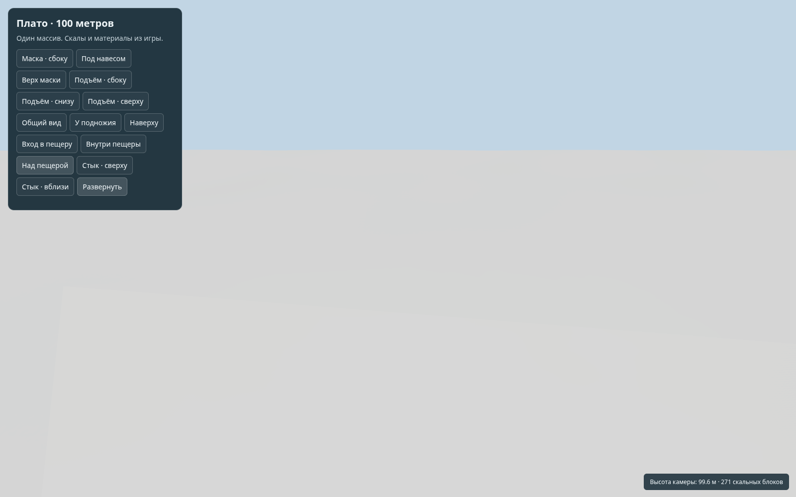

Граница соединения плато и маски
Этап 1: линия построена и проверена. Сама гора и маска ещё не соединены заново. Сайт не публиковался.
Зелёная — будущая граница на настоящих треугольниках плато. Красный пунктир — участок, срезанный подъёмом. Жёлтая — место над пещерой; пещера ниже линии. Линии показаны сквозь поверхности специально.
758 звеньев, без разрывов и самопересечений. Проверены плоскость, подъём, спад и бугры. Геометрия всех 12 поверхностей столкновений сохранена.
Вид сверху с границей

Та же камера без линии

Граница вблизи
Небольшая неровность линии повторяет существующие треугольники края. Её не выравнивали.

Пересечение с подъёмом

Над пещерой

Что ещё не сделано
Продолжение рельефа на маску, удаление закрытого склона из отрисовки и согласование освещения — следующие этапы. Эти снимки не доказывают готовый бесшовный переход.
Геометрические проверки · Проверка сцены · Подробный отчёт
Снимки: Chromium SwiftShader. В общем Chrome WebGL недоступен, поэтому здесь статические изображения. Источник: 6ed671531bc601ad5a40a4d5a0a1e24531e29805.